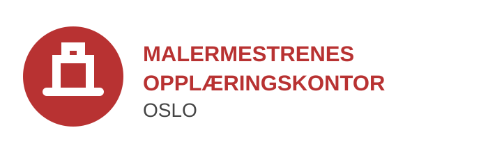

✓
Trygg handel
Velg en medlemsbedrift med dokumentert fagkompetanse og seriøs drift.
Les mer →Finn en seriøs malermester, lær mer om fagutdanningen eller bli en del av bransjefellesskapet.

Velg en medlemsbedrift med dokumentert fagkompetanse og seriøs drift.
Les mer →Maler- og overflateteknikk kombinerer praktisk arbeid, presisjon og kreativitet.
Veien til fagbrev →Få støtte til rekruttering, opplæring og oppfølging av lærlinger.
Bli lærebedrift →Oslo Malermesterlaug samler seriøse maler- og byggtapetserbedrifter i Oslo og Viken. Medlemsbedriftene er tilsluttet MLF, BNL og NHO.